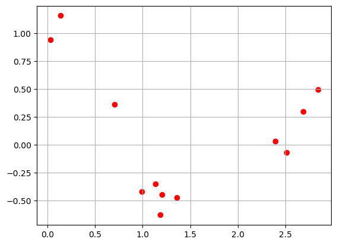
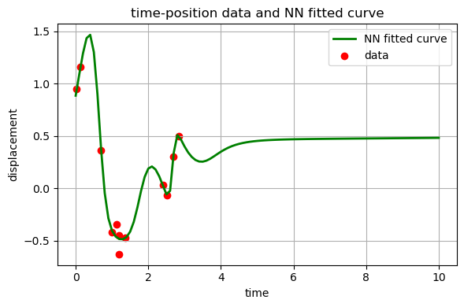
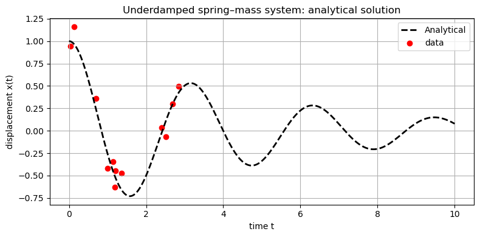
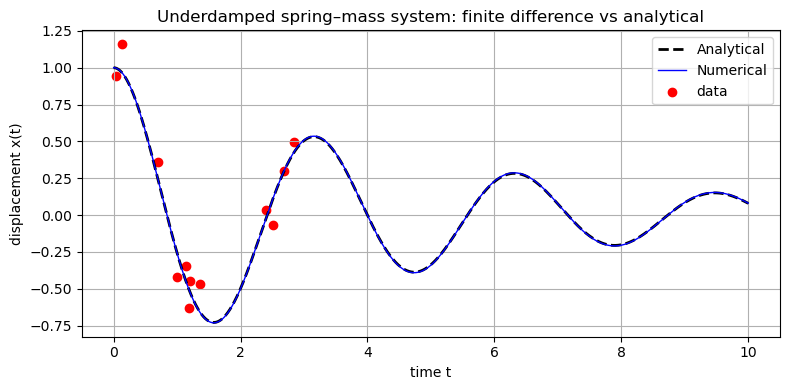
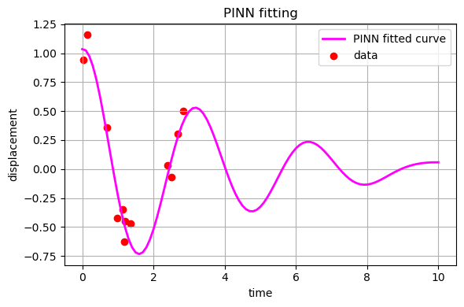
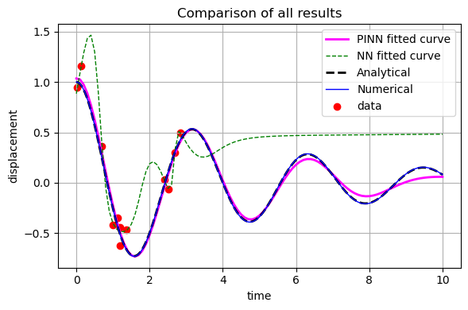

Physics informed neural network (PINN)#
Underdamped spring mass system.#
This notebook file of demonstrating PINN is designed based on a Matlab example (https://www.mathworks.com/discovery/physics-informed-neural-networks.html). The majority of the code is generated by ChatGPT 5.0.
Part 1. Examine the data.#
Here, we have the following measured data for positions at respective times.
import numpy as np
import matplotlib.pyplot as plt
# data points
t_data = np.array([2.51413055, 2.69057256, 0.70275129, 1.36194889, 1.18205768, 1.13500698,
1.2026347, 0.13345253, 0.02948306, 2.3967284, 2.84302119, 0.99167425])
X_data = np.array([-0.06681997, 0.30174692, 0.36124562, -0.47074238, -0.62837142, -0.34655542,
-0.4468897, 1.15918284, 0.94512986, 0.03274587, 0.49890506, -0.42037818])
plt.scatter(t_data, X_data, color='red')
plt.grid(True)

Part 2. Using ANN to fit the data points.#
Now, we have 12 data points. The input value is time and the output value is position. We will build and train a NN model to predict the object position according to time. Ideally, we can fit a curve to those points using neuron network models. This section is similar to the previous code demonstration artificial neural network. This model has input layer, output layer, and several hidden layers.
The cell below load the PyTorch libaray and set the device to use CPU.
import torch
import torch.nn as nn
import torch.optim as optim
device = torch.device("cuda" if torch.cuda.is_available() else "cpu")
print("Using device:", device)
Using device: cpu
Here, we set up a time duration of \([0, 10]\). We also normalize the time such that scaled input time is between 0 and 1. This can increase the training enstivity.
# Time interval (seconds)
t_min, t_max = 0.0, 10.0
# Scaled time s = t / t_max
s_train = t_data / t_max
print(s_train)
[0.25141305 0.26905726 0.07027513 0.13619489 0.11820577 0.1135007
0.12026347 0.01334525 0.00294831 0.23967284 0.28430212 0.09916743]
The data points are stored as numpy arrays. Let’s convert numpy arrays to PyTorch tensor.
# Convert to PyTorch tensors (shape: (N,1))
s_train_torch = torch.tensor(s_train, dtype=torch.float32).view(-1, 1).to(device)
X_train_torch = torch.tensor(X_data, dtype=torch.float32).view(-1, 1).to(device)
s_train_torch.shape, X_train_torch.shape
# s_train_torch is scaled input vector
# X_train_torch is the output values
(torch.Size([12, 1]), torch.Size([12, 1]))
Set up a neural network using PyTorch libary. This NN by default has 3 hidden layers and 32 neurons per hidden layer.
class Net(nn.Module):
def __init__(self, n_hidden=3, n_neurons=32):
super().__init__()
layers = []
layers.append(nn.Linear(1, n_neurons))
layers.append(nn.Tanh())
for _ in range(n_hidden - 1):
layers.append(nn.Linear(n_neurons, n_neurons))
layers.append(nn.Tanh())
layers.append(nn.Linear(n_neurons, 1))
self.net = nn.Sequential(*layers)
def forward(self, s):
return self.net(s)
Set up a loss function of data. Note that this loss function is for the deviations between the NN predicted output and the true observed (measured) output.
mse = nn.MSELoss()
def data_loss(model):
X_pred = model(s_train_torch)
return mse(X_pred, X_train_torch)
Initialize the NN model, named model_NN.
Initialize the optimizer.
model_NN = Net().to(device)
optimizer = optim.Adam(model_NN.parameters(), lr=1e-3)
print(model_NN)
Net(
(net): Sequential(
(0): Linear(in_features=1, out_features=32, bias=True)
(1): Tanh()
(2): Linear(in_features=32, out_features=32, bias=True)
(3): Tanh()
(4): Linear(in_features=32, out_features=32, bias=True)
(5): Tanh()
(6): Linear(in_features=32, out_features=1, bias=True)
)
)
Train the model with 5000 epochs. This section is the same as in the previous class.
epochs = 5000
hist_data = []
for epoch in range(1, epochs + 1):
model_NN.train()
optimizer.zero_grad()
Ld = data_loss(model_NN)
Ld.backward()
optimizer.step()
hist_data.append(Ld.item())
if epoch % 1000 == 0 or epoch == 1:
print(f"Epoch {epoch:5d}/{epochs}, Data: {Ld.item():.4e}")
Epoch 1/5000, Data: 3.4451e-01
Epoch 1000/5000, Data: 5.4481e-03
Epoch 2000/5000, Data: 5.1246e-03
Epoch 3000/5000, Data: 4.8816e-03
Epoch 4000/5000, Data: 3.3771e-03
Epoch 5000/5000, Data: 3.2612e-03
Test the model with test data. Note that we did not implement train-test split here. All available data points have been used in training. Thus, we create a set of linearly spaced grid points as the time values, and use the model to predict the corresponding positions. Then, the input and output will be used to plott the predicted (fitted) curve.
model_NN.eval()
# Dense time grid for the true solution
t_all = np.linspace(t_min, t_max, 101)
with torch.no_grad():
s_plot = torch.tensor(t_all / t_max, dtype=torch.float32).view(-1, 1).to(device)
X_pred = model_NN(s_plot).cpu().numpy().flatten()
X_pred_NN = X_pred
# Plot true solution and noisy data
plt.figure(figsize=(6,4))
plt.plot(t_all, X_pred_NN, 'g-', label="NN fitted curve", linewidth=2)
plt.scatter(t_data, X_data, color="red", label="data")
plt.xlabel("time")
plt.ylabel("displacement")
plt.grid(True)
plt.legend()
plt.title("time-position data and NN fitted curve")
plt.tight_layout()
plt.show()

Part 3. Underlying physics.#
These data points are from a measurement of damped-spring-mass system. According to Newton’s law of force balance, the governing equation is
where \(m\) is the mass, \(c\) is the damping coefficient, and \(k\) is the spring constant. The first through third terms are acceleration, friction (dragging), elastic strain forces. RECALL YOUR ENGINEERING MATH, two coefficients are deduced from those coefficients:
When \(0< \zeta < 1\), it’s an underdamped system, the analytical solution is
where
The two amplitudes (\(A\) and \(B\)) are obtained from initial conditions:
Part 3.1. Analytical solution#
Here, let’s plot the analytical solution using the cell below.
import numpy as np
import matplotlib.pyplot as plt
# -----------------------------
# 1. Physical parameters
# -----------------------------
m = 1 # mass
c = 0.4 # damping coefficient
k = 4 # spring constant
omega0 = np.sqrt(k/m) # natural frequency
zeta = c/(2 * np.sqrt(k*m)) # damping ratio (0 < zeta < 1 => underdamped)
omegad = omega0 * np.sqrt(1.0 - zeta**2) # damped natural frequency
print(f"omega0 = {omega0:.3f}, c = {c:.3f}")
# initial conditions
x0 = 1.0 # initial displacement
v0 = 0.0 # initial velocity
# time grid
t_end = 10.0
dt = 0.001 # time step (small for stability)
N = int(t_end / dt)
t = np.linspace(0.0, t_end, N+1)
# -----------------------------
# 2. Analytical solution (for comparison)
# -----------------------------
omega_d = omega0 * np.sqrt(1.0 - zeta**2) # damped natural frequency
# general underdamped solution:
# x(t) = e^{-zeta*omega0*t} [ A cos(omega_d t) + B sin(omega_d t) ]
# use initial conditions x(0) = x0, v(0) = v0 to solve for A,B:
A = x0
B = (v0 + zeta*omega0*x0) / omega_d
x_exact = np.exp(-zeta*omega0*t) * (A * np.cos(omega_d * t) + B * np.sin(omega_d * t))
# -----------------------------
# 3. Plot the analytical solution
# -----------------------------
plt.figure(figsize=(8,4))
plt.plot(t, x_exact, 'k--', label='Analytical', linewidth=2)
plt.scatter(t_data, X_data, color='red', label='data')
plt.xlabel('time t')
plt.ylabel('displacement x(t)')
plt.title('Underdamped spring–mass system: analytical solution')
plt.grid(True)
plt.legend()
plt.tight_layout()
plt.show()
omega0 = 2.000, c = 0.400

✅ Do This - Compare to the analytical solution, does the NN fitted curve make sense to you?
Part 3.2. Numerical solution#
We can also use finite difference method to numerical solve the damped-spring-mass equation (or simulate the damped oscillation).
The stencil is given as the following. This is an ODE, in which the variable is time. The index \(j\) indicates the \(j\)-th time step.
Hopefully, you can recall this Verlet time scheme which was used in the molecular dynamics homework assignment.
# allocate arrays
x = np.zeros(N+1)
v = np.zeros(N+1)
# set initial conditions
x[0] = x0
v[0] = v0
# -----------------------------
# 4. Finite difference time stepping (forward Euler)
# -----------------------------
for n in range(N):
# acceleration from ODE: m x'' = -c x' - k x
a = -(c/m) * v[n] - (k/m) * x[n]
# update velocity and displacement
v[n+1] = v[n] + dt * a
x[n+1] = x[n] + dt * v[n]
x_num = x
# -----------------------------
# 5. Plot the numerical and analytical solutions
# -----------------------------
plt.figure(figsize=(8,4))
plt.plot(t, x_exact, 'k--', label='Analytical', linewidth=2)
plt.plot(t, x_num, 'b', label='Numerical', linewidth=1)
plt.scatter(t_data, X_data, color='red', label='data')
plt.xlabel('time t')
plt.ylabel('displacement x(t)')
plt.title('Underdamped spring–mass system: finite difference vs analytical')
plt.grid(True)
plt.legend()
plt.tight_layout()
plt.show()

✅ Do This - Do you think the finite difference mehthod did an excellent job?
✅ Do This - The available data points span only over a small section of the total time duration. Do you NN can extrapolate (predict) the displacement in the region where there are no data points being used in training?
Part 4. Physics informed neural network (PINN).#
The idea of PINN is that when the physics of the data is known, i.e., there is a physics model (governed by equations). The governing equations can be used as part of the model training. Specifically, the NN predicted values will be substituted to the giverning equations. The difference is part of the loss function. Thus, as you can expect, **the weights in NN are also adjusted to make the predictions satisfy the governing equations. To do so, we include a physics loss term to the total loss funtion.
The training is to find the values of the weight that minimize the total loss function. The rest of the tasks follow the NN process: forward propagation to prediction and backward correction of wieghts.
Part 4.1. Build and train PINN model#
For differential equations, we will need to calculate derivatives. This is done by using PyTorch built-in function
autograd.
# calculate derivative (gradient): dX/dt
def grad(outputs, inputs):
return torch.autograd.grad(
outputs,
inputs,
grad_outputs=torch.ones_like(outputs),
create_graph=True)[0]
Calculate physics loss. In the code cell below, we randomly select time points, substitute to the ODE, and calculate the residual (derivation from satisfying the ODE). When residual is zero, the equation is satisfied with the input variable. Note that the input variables are scaled time.
def physics_loss(model, n_collocation=2000, m = 1, c = 0.4, k = 4):
# sample collocation points t in [0, t_max]
s_f = torch.rand(n_collocation, 1, device=device)
s_f.requires_grad_(True)
# gradients
X_f = model(s_f)
dX_ds = grad(X_f, s_f)
d2X_ds2 = grad(dX_ds, s_f)
# ODE of damped spring mass system
ode_res = m * d2X_ds2 + t_max * c * dX_ds + t_max**2 * k * X_f
return torch.mean(ode_res**2)
Initial condition loss. If you have the initial condition (\(A\) and \(B\)), the model will also approach the initial conditions. Below is a loss function for initial conditions.
def ic_loss(model, x0=0.0, v0=0.0):
s0 = torch.zeros(1, 1, device=device, requires_grad=True) # s=0 => t=0
X0 = model(s0)
dX_ds0 = grad(X0, s0)
dX_dt0 = dX_ds0 / t_max # because t = s * t_max
loss_x0 = (X0 - x0)**2
loss_v0 = (dX_dt0 - v0)**2
return (loss_x0 + loss_v0).mean()
Total loss function. Now, we include governing equation as an additional reference to calculate derivation between NN predicted output and true value (both measured data and governing equation). Note that in the code below, we introduce a coefficient (lambda_phys) as a weighing factor between data loss and physics loss.
def total_loss(model, m=1.0, c=0.4, k=4.0, lambda_phys=1.0e-4, lambda_ic=1.0e-4, x0 = 1.0, v0 = 0.0 ):
L_data = data_loss(model)
L_phys = physics_loss(model, n_collocation=2000, m=m, c=c, k=k)
L_ic = ic_loss(model, x0=x0, v0=v0) # choose ICs you want
L = L_data + lambda_phys * L_phys + lambda_ic * L_ic
return L, L_data.detach(), L_phys.detach()
Finally, let’s put everything together. We initialize a PINN model that has the same structure of the previous NN model.
s_train_torch = torch.tensor(s_train, dtype=torch.float32).view(-1, 1).to(device)
X_train_torch = torch.tensor(X_data, dtype=torch.float32).view(-1, 1).to(device)
model_PINN = Net().to(device)
optimizer = optim.Adam(model_PINN.parameters(), lr=1e-3)
Train the PINN model.
# -----------------------------
# Physical parameters
# -----------------------------
m = 1 # mass
c = 0.4 # damping coefficient
k = 4 # spring constant
lambda_phys = 0.5e-4 # weigh-in of physics
lambda_ic=1.0e-4 # weigh-in of IC
# initial condition
x0 = 1.0
v0 = 0.0
# -----------------------------
# Train the PINN model
# -----------------------------
epochs = 5000
hist_total, hist_data, hist_phys = [], [], []
for epoch in range(1, epochs + 1):
model_PINN.train()
optimizer.zero_grad()
L, Ld, Lp = total_loss(model_PINN, m, c, k, lambda_phys, lambda_ic, x0, v0)
L.backward()
optimizer.step()
hist_total.append(L.item())
hist_data.append(Ld.item())
hist_phys.append(Lp.item())
if epoch % 1000 == 0 or epoch == 1:
print(f"Epoch {epoch:5d}/{epochs}, total: {L.item():.4e}, Data: {Ld.item():.4e}, phys: {Lp.item():.4e}")
Epoch 1/5000, total: 3.2051e-01, Data: 3.1748e-01, phys: 5.8594e+01
Epoch 1000/5000, total: 3.4903e-02, Data: 1.8225e-02, phys: 3.3356e+02
Epoch 2000/5000, total: 2.3591e-02, Data: 1.5512e-02, phys: 1.6156e+02
Epoch 3000/5000, total: 2.0597e-02, Data: 1.5264e-02, phys: 1.0665e+02
Epoch 4000/5000, total: 1.9350e-02, Data: 1.5278e-02, phys: 8.1421e+01
Epoch 5000/5000, total: 1.7937e-02, Data: 1.5140e-02, phys: 5.5900e+01
✅ Do This - The PINN model takes much longer in model training. Use your own words to explain why.
Evaluate the trained PINN model. Again, we use a set of linearly spaced grid to plot the fitted curve.
model_PINN.eval()
# Dense time grid for the true solution
t_all = np.linspace(t_min, t_max, 101)
with torch.no_grad():
s_plot = torch.tensor(t_all / t_max, dtype=torch.float32).view(-1, 1).to(device)
X_pred = model_PINN(s_plot).cpu().numpy().flatten()
X_pred_PINN = X_pred
# Plot true solution and noisy data
plt.figure(figsize=(6,4))
plt.plot(t_all, X_pred_PINN, color="magenta", label="PINN fitted curve", linewidth=2)
plt.scatter(t_data, X_data, color="red", label="data")
plt.xlabel("time")
plt.ylabel("displacement")
plt.grid(True)
plt.legend()
plt.title("PINN fitting")
plt.tight_layout()
plt.show()

Part 4.2. Comparison between PINN and NN results.#
Let’s plot the two curves and compare the results from NN and PINN model.
# Plot true solution and noisy data
plt.figure(figsize=(6,4))
plt.plot(t_all, X_pred_PINN,color="magenta", label="PINN fitted curve", linewidth=2)
plt.plot(t_all, X_pred_NN, 'g--', label="NN fitted curve", linewidth=1)
plt.plot(t, x_exact, 'k--', label='Analytical', linewidth=2)
plt.plot(t, x_num, 'b', label='Numerical', linewidth=1)
plt.scatter(t_data, X_data, color="red", label="data")
plt.xlabel("time")
plt.ylabel("displacement")
plt.grid(True)
plt.legend()
plt.title("Comparison of all results")
plt.tight_layout()
plt.show()

✅ Do This - The accuracy of PINN model could be bad in the tail part compared to the numerical solution. Use your own words to explain why.